One media toolbox for video, audio & images — powered by FFmpeg & yt-dlp
Convert, edit, merge, split, crop and download media without juggling five different apps. Data Command Center wraps FFmpeg and yt-dlp in a fast, GPU-aware desktop UI with batch queues, presets, and a YouTube downloader built in.
Standalone build includes FFmpeg, FFprobe and yt-dlp — just extract and run DataCommandCenter.exe. No install, no admin rights.
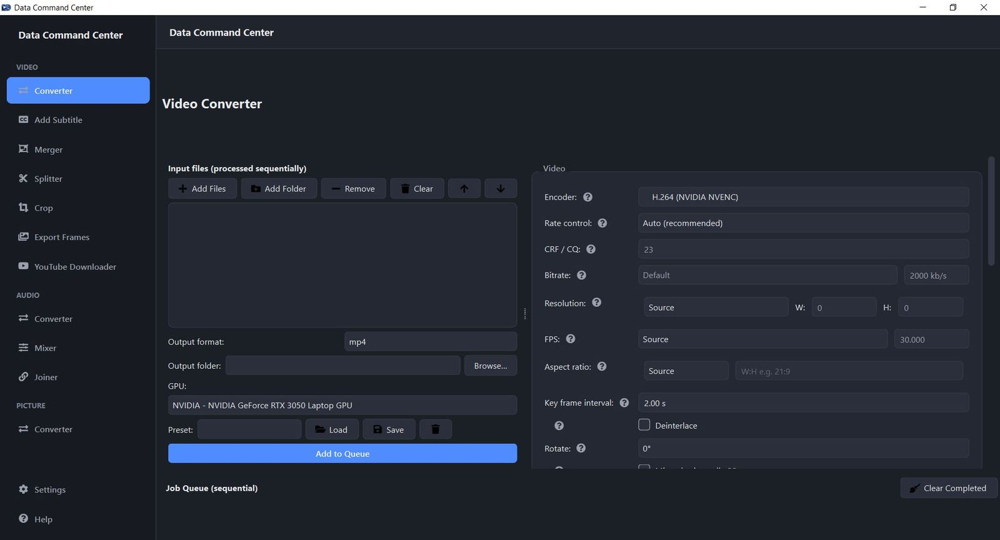
Everything you'd normally need three apps for
Video, audio and picture tools live side by side, sharing the same batch queue, preset system and GPU-aware encoder picker.
Video
- ConverterBatch conversion to any container/codec with full control over encoder, rate control, resolution, FPS, aspect ratio, filters, fades, anti-shake, denoise, sharpness, grain and more — plus a matching audio-track panel.
- Add SubtitleSoft-mux a toggleable subtitle track, or hard-burn it into the picture.
- MergerJoin multiple video files into one.
- SplitterExtract the video-only and audio-only tracks from a file.
- CropCut a rectangular region out of the frame.
- Export FramesPull stills out of a video by interval, count, or time range.
- YouTube DownloaderIndependent video/audio quality pickers with file size shown per option, MP4 preference, playlist support with item ranges and cross-playlist quality matching, a download archive, cookie-file auth, and a one-click yt-dlp self-updater.
Audio
- ConverterEncoder, sample rate, bitrate, channels, volume, fades, echo, denoise, reverse and multi-stream handling.
- MixerBlend multiple tracks together with independent per-track volume.
- JoinerConcatenate multiple tracks into one file.
Picture
- ConverterFormat conversion (JPEG, PNG, WebP and more) with resolution control.
Platform
- GPU-first encodingAuto-detects every GPU (NVIDIA / AMD / Intel) and lists its hardware encoders ahead of CPU ones.
- PresetsSave, load and delete named setting profiles on every feature page.
- Contextual helpA (?) next to every setting, plus a searchable Help page.
- Dark / light themeSwitchable at runtime, no restart needed.
- Sequential job queueBatches process one file at a time with live progress, cancel and clear.
See every page
Fourteen screens, one consistent interface — in both dark and light mode.
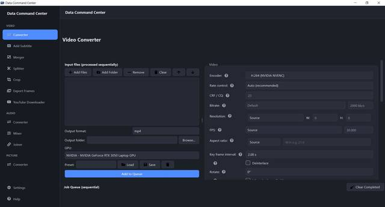
Video Converter
Batch encode, any codec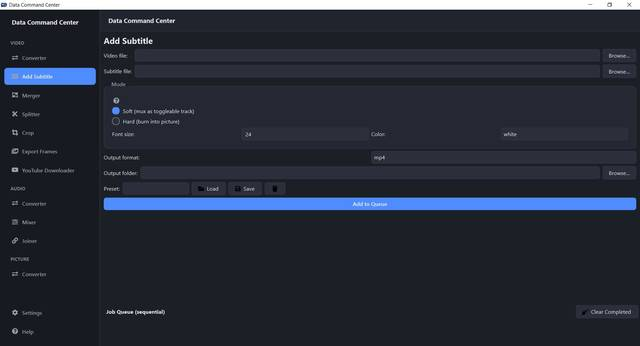
Add Subtitle
Soft-mux or hard-burn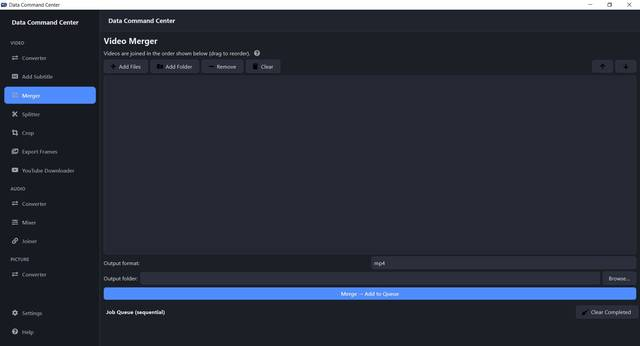
Merger
Join clips into one file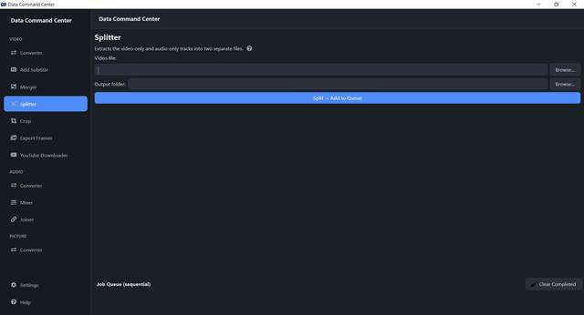
Splitter
Pull tracks apart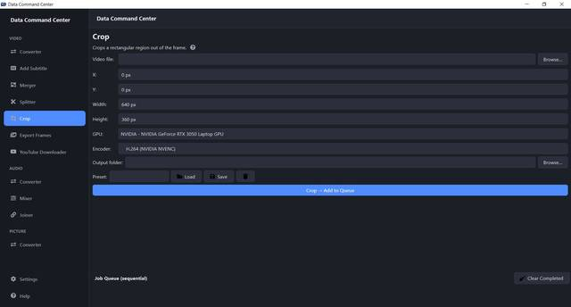
Crop
Cut the frame down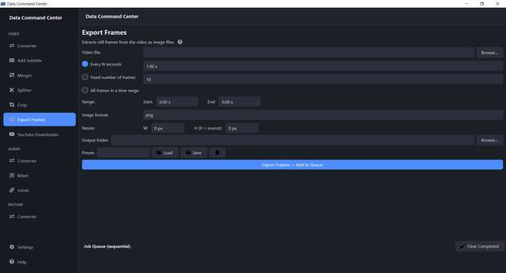
Export Frames
Video → stills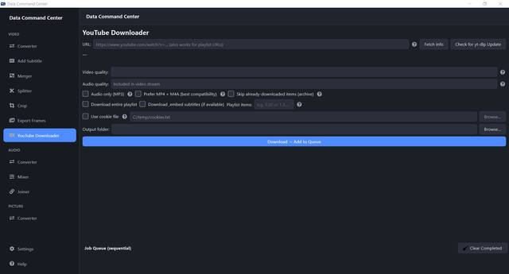
YouTube Downloader
Powered by yt-dlp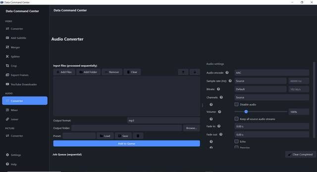
Audio Converter
Encode, resample, effects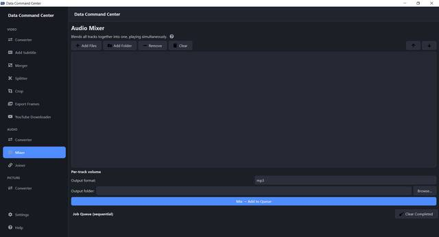
Mixer
Blend tracks together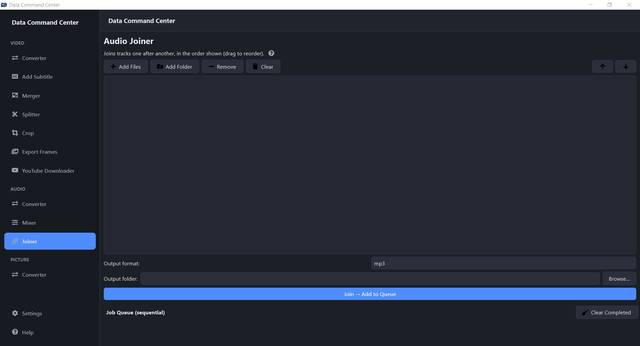
Joiner
Concatenate tracks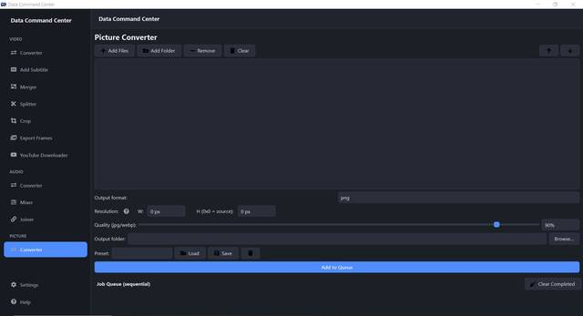
Picture Converter
Format + resolution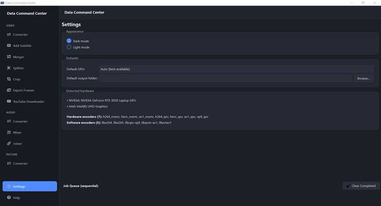
Settings — Dark mode
GPU auto-detection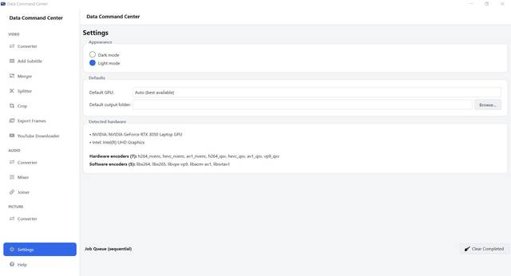
Settings — Light mode
Switchable at runtime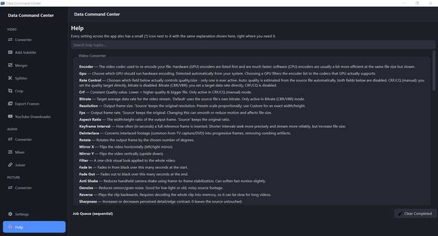
Help
Searchable, contextualGet started
Two ways to run it: grab the standalone build, or run it from source.
For everyone: standalone build
How to run:
- Download the v1.0a EXE release below.
- Extract and run the exe — no installer needed.
_internal directory from the exe file.For developers: run from source
The repo includes yt-dlp.exe. ffmpeg.exe and ffprobe.exe aren't checked in — they're ~211MB each, over GitHub's 100MB limit — so grab a Windows build (e.g. the "full" build from gyan.dev) and drop both into bin/ first.
python -m venv .venv
.venv\Scripts\pip install -r requirements.txt
.venv\Scripts\python -m dcc.main.\build.ps1 (runs PyInstaller via DataCommandCenter.spec).Built to run entirely on your machine
No accounts, no cloud uploads, no subscriptions. Your files never leave your computer.
Local processing
Every conversion runs through FFmpeg on your own hardware.
GPU-aware
NVENC, AMF and QuickSync detected and preferred automatically.
Batch queue
Queue whole folders and let it process sequentially, unattended.
Presets
Save your exact settings once, reuse them on every job after.
Contextual help
A (?) next to every setting, plus a searchable Help page.
Ready to try it?
Free download for Windows 10/11 — standalone build, no install required.
Frequently asked questions
Is Data Command Center free?▾
Yes — it's free to download and use. The source code is also available on GitHub.
What platforms does it run on?▾
Windows 10 and 11 only, for now. It's built with PySide6 (Qt6); there's no macOS or Linux build at this time.
Do I need to install FFmpeg myself?▾
Not if you use the standalone EXE release — it already bundles ffmpeg.exe, ffprobe.exe and yt-dlp.exe. You only need to download FFmpeg separately if you're running the app from source, since those binaries are too large to store in the GitHub repository (over its 100MB file limit).
Does it use my GPU for encoding?▾
Yes. It auto-detects every GPU in your system (NVIDIA, AMD, Intel) and lists its hardware encoders — NVENC, AMF, QuickSync — ahead of, and visually distinct from, the CPU (software) encoders.
Can it download YouTube playlists?▾
Yes. The YouTube Downloader page is powered by yt-dlp and supports full playlists with item ranges, a download archive to skip already-downloaded videos, and cookie-file authentication for restricted videos. For playlists, it also cross-checks every video's available formats so the quality you pick is guaranteed to apply across the whole playlist.
Does my media get uploaded anywhere?▾
No. All conversion, editing and processing happens locally on your machine through FFmpeg. The only network activity is the YouTube Downloader page talking to YouTube to fetch the video or playlist you asked for.
Is this affiliated with YouTube or FFmpeg?▾
No. Data Command Center is an independent, unofficial project. YouTube downloading is powered by the open-source yt-dlp project and media processing uses the open-source FFmpeg project; it is not affiliated with, endorsed by, or sponsored by YouTube, Google, or the FFmpeg team.